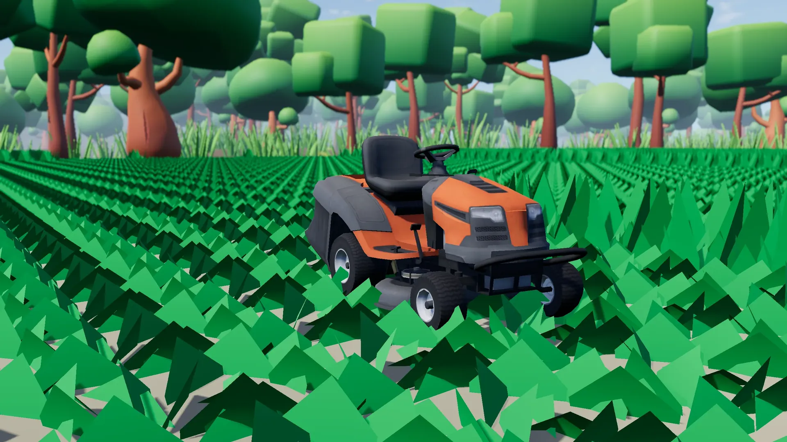

Generated contracts
Varied properties and job conditions provide a new route through the workday.

In active development
Build a lawn-care business, one contract and one clean cut at a time.
Official trailer
From choosing a contract to making the final pass, watch the current game loop come together.
Watch on YouTubeAbout the game
A Cut Above: Mow & Grow is an independent 3D simulation about the satisfying work of caring for lawns and the decisions behind a small service business.
Pick contracts in town, travel to each property, finish the cut, and turn the payment into fuel and better equipment. Different mowers, weather, market conditions, and property layouts keep the work changing.
The current build connects the complete loop from the main menu through contract settlement and back to town, with persistent progress between sessions.
The workday
Each job feeds the next decision. Take the work, finish it well, then decide how to put the earnings back into the business.
Compare available contracts at the town job board.
Head to the property with the mower you want to run.
Read the terrain, plan clean passes, and track progress.
Finish the required cut and settle the contract.
Refuel or tune equipment for speed, handling, and efficiency.
Return to town and line up the next day of work.
Current features
Grounded systems connect the physical work on each lawn to the choices made back in town.
Varied properties and job conditions provide a new route through the workday.
Run a riding mower, powered walk-behind, or fuel-free manual push mower.
Large grass areas react to every pass and report live contract completion.
Visit the job office, supply store, business office, and mower workshop.
Powered equipment consumes fuel, while manual work trades speed for lower cost.
Invest per mower in speed, efficiency, and handling where each machine allows.
Persistent days move through clear, foggy, and rainy working conditions.
Money, contracts, equipment, world state, and active lawn work can be saved.
Current build
Captured from the playable project, from planning a contract in town to finishing the last strip of grass.
 Workshop
Workshop
Business progression
Every payment gives you another choice. Cover operating costs, tune a favorite mower, or save for the work ahead.
Behind the scenes
The public repository documents how the current playable loop is structured and validated.
GDScript systems coordinate the menu, town, mowing jobs, settlement, and return flow.
Custom grass rendering supports large mowable properties and visible cutting progress.
Contracts and market changes respond to the persistent day without losing reproducibility.
Automated checks and capture utilities help verify the full loop and record current builds.
Development status
Current work focuses on presentation, balance, content variety, and performance. Follow development on GitHub, play the current build, or wishlist the game on Steam.